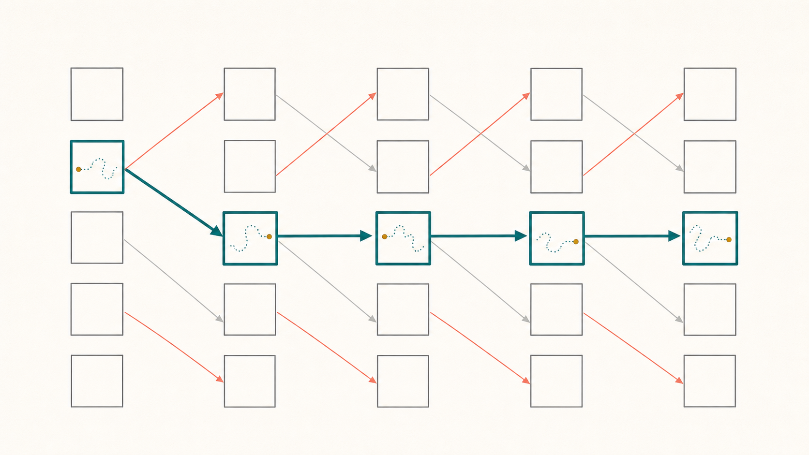

Sharp behavior of the free energy for the two-dimensional directed polymer
Quentin Berger · Shuta Nakajima Sorbonne Paris Nord · Keio University
From disordered interfaces to the KPZ universality class
Random Ising interfaces
Directed polymers arose as effective models for domain walls pinned and roughened by quenched impurities. The path balances elastic wandering against favorable disorder.
A Hopf-Cole discretization
The point-to-point partition function obeys a random heat recursion:
Thus $h_n(x)=\log Z_n(x)$ is a discrete counterpart of the KPZ height field.
Universality and localization
The model connects interface growth, transport in random media, pinning, and localization. Its free energy records the macroscopic cost of disorder.
How does microscopic randomness change large-scale geometry, fluctuations, and thermodynamic behavior?
Huse-Henley, Phys. Rev. Lett. 54 (1985); Kardar-Parisi-Zhang, Phys. Rev. Lett. 56 (1986); Alberts-Khanin-Quastel, Ann. Probab. 42 (2014).
A random walk rewarded by a random environment
Ingredients
- $S=(S_n)_{n\ge 0}$: simple random walk on $\Z^d$.
- $\omega=(\omega_{n,x})$: i.i.d. centered disorder with finite exponential moments.
- $\beta$: inverse temperature; large $\beta$ favors energetic paths.
Bernoulli example
Normalized partition function
Here $\lambda(\beta)=\log \E[e^{\beta\omega_{1,0}}]$, so $\E[Z_N^{\beta,\omega}]=1$.
$f(\beta)=\displaystyle\lim_{N\to\infty}\frac1N\log Z_N^{\beta,\omega}\le 0$ measures the exponential loss caused by localization.
Model introduced in $1+1$ dimensions by Huse and Henley (1985); see Comets (2017) for a general account.
Dimension decides the phase transition
| Dimension | Critical point | Known critical behavior | Selected work |
|---|---|---|---|
| $d=1$ | $\beta_c=0$ | $f(\beta)=-(1+o(1))\,\beta^4/6$ | Comets-Vargas; Lacoin; Nakajima (2019) |
| $d=2$ | $\beta_c=0$ | $f(\beta)=-\exp\{-(1+o(1))\pi/\beta^2\}$ | Lacoin; Nakajima; Berger-Lacoin (2017); BCT (2025) |
| $d\ge3$ | $\beta_c>0$ | Behavior as $\beta\downarrow\beta_c$ remains much less precise. | Bolthausen; Junk-Lacoin (2026); Lacoin (2025) |
$\beta_c:=\sup\{\beta:f(\beta)=0\}$, with $f(\beta)<0$ exactly in the localized phase $\beta>\beta_c$.
Statements and citations follow the introduction of the manuscript.
The correct 2D scale, up to constants
for $\beta\in(0,\beta_0/4)$, where $c,c'>0$ and
The new contribution is the lower bound. The matching upper bound is Theorem 2.8 of BCT (2025).
Choose the correlation scale and coarse-grain
Take $N=N(\beta)\asymp \varepsilon\,e^{\pi/\sigma^2(\beta)}$ with fixed small $\varepsilon$.
Partition time-space into blocks. A block has time length $N$ and spatial width of order $\sqrt N$. The random walk can move only to a neighboring block in the next layer.
The point-to-plane second moment grows like $\log N$ at this scale. Small variance requires a regular initial distribution, not a point mass.
Measure diffusive regularity by log-energy
Kernel and energy
$$K_N(x)=\left(1+\log_+\frac{N}{1+|x|^2}\right)e^{-|x|^2/(2N)}$$ $$\EK_{K_N}(\mu)=\sum_{u,v}\mu(u)K_N(v-u)\mu(v).$$What does bounded energy say?
If $\EK_{K_N}(\mu)\le A$, then $\mu$ cannot put too much mass inside balls much smaller than $\sqrt N$.
The uniform law on a block has bounded log-energy, uniformly in $N$.
Log-energy is the state variable carried from one open block to the next. It records exactly the regularity needed for the variance estimate.
Regularity propagates with high probability
Input at a block
$\mu$ is supported in the current box and satisfies $\EK_{K_N}(\mu)\le A$.
Output in a neighboring block
With probability at least $1-\delta$, the constrained partition function is at least $c_\star/2$ and the normalized endpoint law $\nu$ still satisfies $\EK_{K_N}(\nu)\le A$.
Choosing $\vartheta_0<0$ makes $\mathcal V(e^{\vartheta_0})$ small. Chebyshev and Markov bounds then give the propagation statement.
Open blocks dominate oriented percolation

- An edge is open when its block mass is at least $c_\star/2$ and its endpoint law has energy at most $A$.
- Open indicators have finite-range dependence and conditional probability at least $1-\delta$.
- LSS domination gives an infinite oriented open path with positive probability.
The same scale governs moments
Exact second-moment exponent
For $\F_2(\beta)=\lim_N N^{-1}\log \E[(Z_N^{\beta,\omega})^2]$,
$$\F_2(\beta)\sim 16e^{-\pi}\,e^{-\pi/\sigma^2(\beta)}.$$Therefore $-f(\beta)\asymp \F_2(\beta)$ as $\beta\downarrow0$.
Critical window and Lyapunov exponents
The scale $N|f(\beta_N)|\asymp1$ is equivalent to
$$\sigma^2(\beta_N)\frac{\log N}{\pi} =1+O\!\left(\frac1{\log N}\right).$$For fixed $p\ne1$, $\F_p(\beta)$ also has size $e^{-\pi/\sigma^2(\beta)}$ in the ranges proved in the manuscript.
The second moment is reduced by the replica trick to a two-dimensional homogeneous pinning model.
One stable quantity links analysis to geometry
Bounded log-energy survives a good block and makes the next good block likely.
Multiplying block contributions along that path converts survival into the sharp lower bound at scale $N^{-1}$.
This is the main new mechanism of the proof: log-energy is propagated inside the oriented percolation construction.
At the 2D critical scale, regularity is enough to percolate
The high-temperature free energy has size $e^{-\pi/\sigma^2(\beta)}$ up to constants.
Log-energy captures diffusive spread and is stable across good polymer blocks.
Oriented percolation turns local high-probability control into a global free-energy bound.
Quentin Berger · Shuta Nakajima